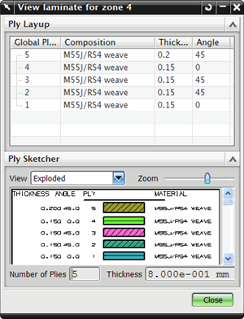

区域是具有以下特性的单元集：
位于相同的多边形面上
共享相同的全局铺层
在指定区域角度公差范围内，所有单元共享相同的铺层和纤维方向
各个区域都有唯一的层合板物理属性表，它将被结构求解器调用。
对于各个区域，您可以：
列出区域属性
创建单元组来隐藏、显示或者使单元更容易选择
创建层合板物理属性表来修改、查看，并通过物理属性表管理器对话框对其进行管理管理
查看层合板与它的堆叠顺序、层片属性以及草图
